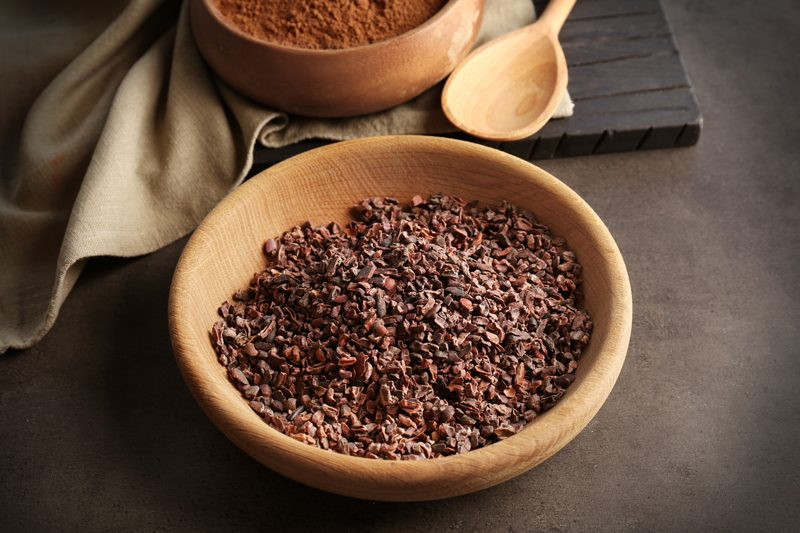

Cacao Nibs
Cacao nibs are simply chocolate in its purest form before anything else is added… and I mean ANYTHING. These are not the type of chocolates that you just popped straight into your mouth unless you like very, very bitter dark chocolate.
They are dried and fermented bits of cacao beans. The texture is similar to that of roasted coffee beans if you are a coffee connoisseur. They have a deep chocolate flavor, which can be described as slightly bitter (understatement according to my taste buds anyway) and nutty.

Natural Chocolate “Chips”
Think of them as natures, all naturally unsweetened chocolate chip. They add a great crunch to recipes, and unlike their processed chocolate chip counterparts, they packed with powerful nutrients, antioxidants, and natural mood lifters.
They are great when they are incorporated into recipes that offer up some sweetness, which will help balance the bitter notes. Add them to cookie and bar recipes, throw a tablespoon into your smoothie or if brave enough, eat them straight out of your hand. Unlike M&Ms…. they won’t melt in your hand or pocket. :)
Mood Improver
Neurotransmitters are little mailmen that run around in our bodies like little messengers. They tell our bodies how to act, and that includes mood. Cacao stimulates the brain to release particular neurotransmitters that can trigger emotions, such as euphoria. That’s why some people say chocolate is better than sex! If you are sensitive to caffeine, foody-beware… raw cacao powder contains caffeine, so eat with caution.
What’s good for the brain is good for the body.
With that being said, they are a great source of iron, which is necessary for red blood cell production. And what food wouldn’t be considered a superfood if it wasn’t rich in Antioxidants? They are essential for our health because they absorb the free radicals that cause damage to the body.
© AmieSue.com